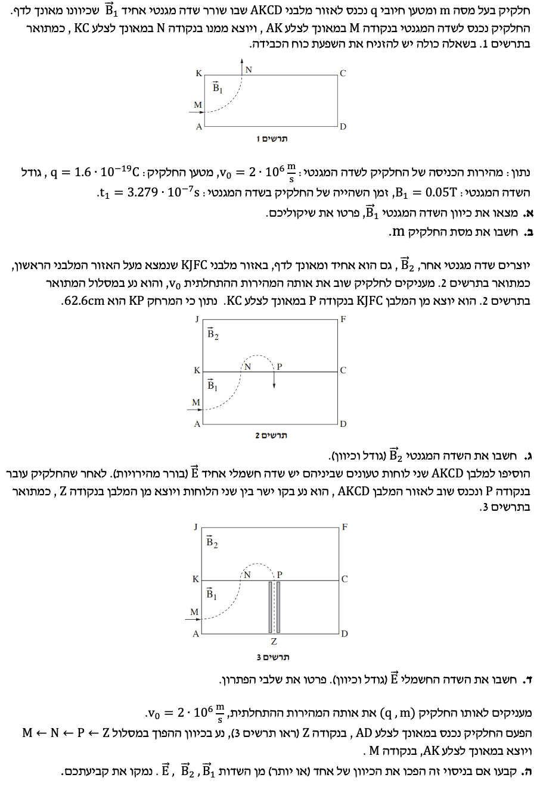

פתרון מודרך: בורר מהירויות, תנועה מעגלית וקשר בין פרמטרים.

על פי תרשים 1, החלקיק (בעל מטען חיובי) נכנס לשדה המגנטי בנקודה M כשהוא נע ימינה (בכיוון ציר $+x$). החלקיק מבצע תנועה מעגלית וסוטה כלפי מעלה, כלומר כוח לורנץ המגנטי $\vec{F}_B$ פועל עליו כלפי מעלה (בכיוון ציר $+y$) אל עבר מרכז המעגל שבנקודה K.
על פי כלל יד ימין עבור מטען חיובי (אגודל בכיוון המהירות $\vec{v}$, וכף היד בכיוון הכוח $\vec{F}_B$), האצבעות המורות את כיוון השדה המגנטי $\vec{B}$ חייבות להצביע פנימה אל תוך הדף.
החלקיק נכנס במאונך לצלע אחת (AK) ויוצא במאונך לצלע סמוכה (KC). מכאן נובע שמסלולו בתוך המלבן מהווה בדיוק רבע מעגל.
זמן השהייה של החלקיק בשדה, $t_1$, שווה לרבע זמן המחזור של התנועה המעגלית: $$ t_1 = \frac{T}{4} $$
כדי למצוא את זמן המחזור $T$, נפתח את הנוסחה מתוך שקול הכוחות בתנועה מעגלית. הכוח המגנטי משמש ככוח צנטריפטלי: $$ \Sigma F = m a_c \implies q v_0 B_1 = \frac{m v_0^2}{R} $$ נצמצם ב-$v_0$ ונקבל את רדיוס המסלול: $$ R = \frac{m v_0}{q B_1} $$ הקשר בין מהירות, רדיוס וזמן מחזור הוא $v_0 = \frac{2\pi R}{T}$, ולכן: $$ T = \frac{2\pi R}{v_0} $$ נציב את הביטוי ל-$R$ שקיבלנו, ונקבל את זמן המחזור: $$ T = \frac{2\pi \left(\frac{m v_0}{q B_1}\right)}{v_0} = \frac{2\pi m}{q B_1} $$
נציב זאת במשוואת הזמן: $$ t_1 = \frac{1}{4} \cdot \frac{2\pi m}{qB_1} = \frac{\pi m}{2qB_1} $$
נבודד את המסה $m$: $$ m = \frac{2 \cdot q \cdot B_1 \cdot t_1}{\pi} $$
נציב את הנתונים: $$ m = \frac{2 \cdot 1.6 \cdot 10^{-19} \cdot 0.05 \cdot 3.279 \cdot 10^{-7}}{\pi} $$ $$ m = \frac{0.16 \cdot 3.279 \cdot 10^{-26}}{3.14159} \approx 1.67 \cdot 10^{-27} \text{ kg} $$
חישוב הרדיוס בשדה הראשון ($R_1$):
נחשב את רדיוס המסלול באזור הראשון. מכיוון שהמסלול מתחיל במאונך ל-AK ומסתיים במאונך ל-KC, מרכז המעגל חייב להיות בדיוק בקודקוד K. לכן, אורך הקטע KN שווה לרדיוס $R_1$. $$ R_1 = \frac{m v_0}{q B_1} $$ $$ R_1 = \frac{1.67 \cdot 10^{-27} \cdot 2 \cdot 10^6}{1.6 \cdot 10^{-19} \cdot 0.05} = \frac{3.34 \cdot 10^{-21}}{8 \cdot 10^{-21}} = 0.4175 \text{ m} = 41.75 \text{ cm} $$ מכאן ש- $KN = 41.75 \text{ cm}$.
חישוב הרדיוס בשדה השני ($R_2$):
החלקיק מבצע חצי מעגל באזור השני (בין N ל-P). קוטר המעגל הוא הקטע NP. נתון המרחק $KP = 62.6 \text{ cm}$. אורכו של קוטר המסלול השני הוא: $$ 2R_2 = NP = KP - KN = 62.6 - 41.75 = 20.85 \text{ cm} = 0.2085 \text{ m} $$ מכאן שרדיוס המסלול בשדה השני הוא: $R_2 = 10.425 \text{ cm} = 0.10425 \text{ m}$.
חישוב גודל השדה $B_2$:
נשתמש שוב בנוסחת הרדיוס: $$ R_2 = \frac{m v_0}{q B_2} \implies B_2 = \frac{m v_0}{q R_2} $$ $$ B_2 = \frac{1.67 \cdot 10^{-27} \cdot 2 \cdot 10^6}{1.6 \cdot 10^{-19} \cdot 0.10425} = \frac{3.34}{1.668} \approx 0.2 \text{ T} $$
קביעת הכיוון:
החלקיק נכנס לנקודה N כשהוא נע כלפי מעלה, וסוטה ימינה כדי להגיע לנקודה P. לפיכך, כוח לורנץ פועל עליו ימינה. לפי כלל יד ימין למטען חיובי (מהירות למעלה, כוח ימינה), השדה המגנטי $\vec{B}_2$ חייב להצביע החוצה מתוך הדף.
החלקיק חוזר מנקודה P למלבן התחתון ונע בקו ישר אל הנקודה Z. תנועה בקו ישר בשדה מגנטי (שאינו מקביל למהירות) מתאפשרת רק אם שקול הכוחות על החלקיק שווה לאפס ($\Sigma \vec{F} = 0$). במקרה זה המערכת מתפקדת כבורר מהירויות.
הכוח המגנטי ($\vec{F}_B$) שווה בגודלו ומנוגד בכיוונו לכוח החשמלי ($\vec{F}_E$): $$ qE = qv_0B_1 \implies E = v_0 B_1 $$
נחשב את גודל השדה החשמלי: $$ E = (2 \cdot 10^6) \cdot 0.05 = 100,000 \text{ N/C} $$
קביעת הכיוון:
החלקיק נע מטה (מ-P ל-Z). השדה המגנטי $B_1$ מכוון אל תוך הדף. לפי כלל יד ימין, הכוח המגנטי $\vec{F}_B$ פועל עליו ימינה. כדי לאזן את הכוח המגנטי, הכוח החשמלי $\vec{F}_E$ חייב לפעול שמאלה. מכיוון שמטען החלקיק חיובי ($q > 0$), כיוון השדה החשמלי $\vec{E}$ זהה לכיוון הכוח החשמלי, ולכן הוא מכוון שמאלה.
כעת יורים את החלקיק מנקודה Z כלפי מעלה באותה מהירות $v_0$, והוא עוקב במדויק אחר המסלול ההפוך. ננתח כל אזור בהנחה שהשדה החשמלי $\vec{E}$ לא שינה את כיוונו (כלומר, הוא עדיין מכוון שמאלה):